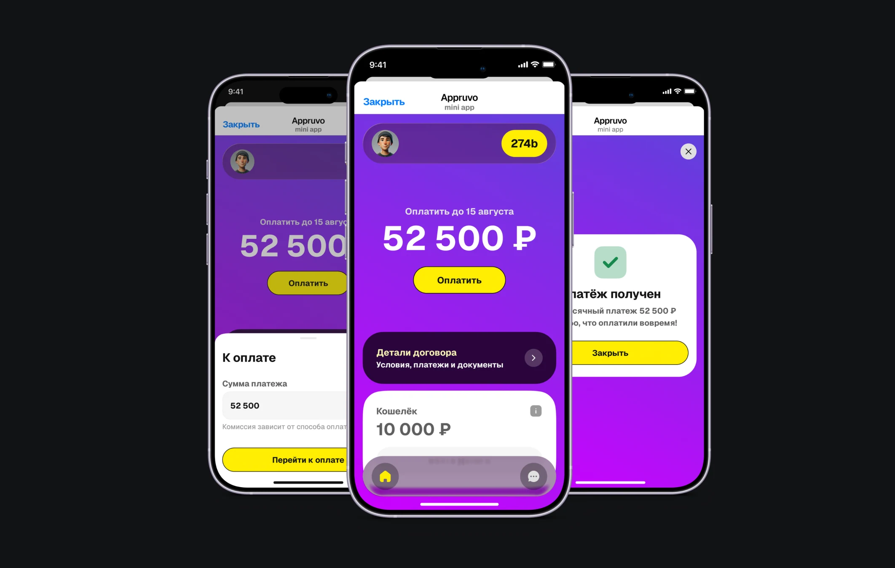
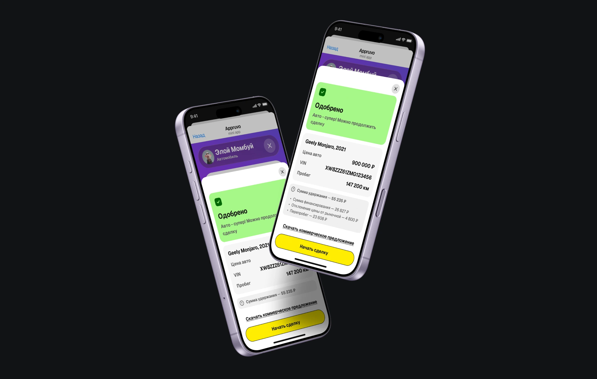
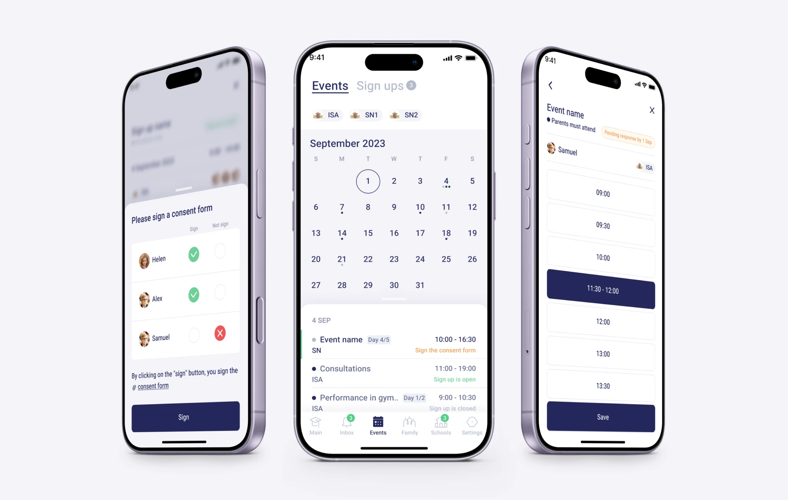
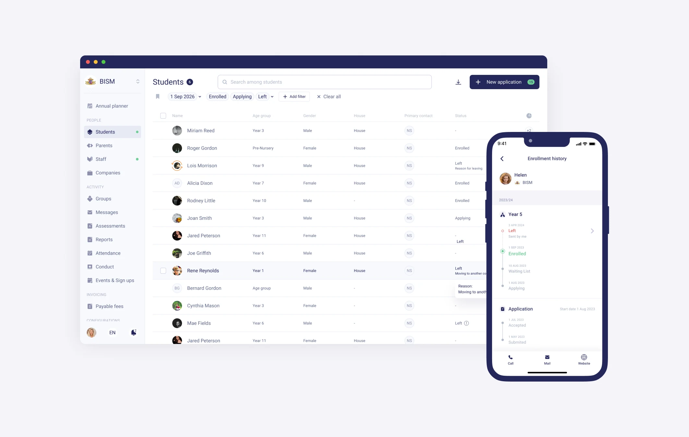
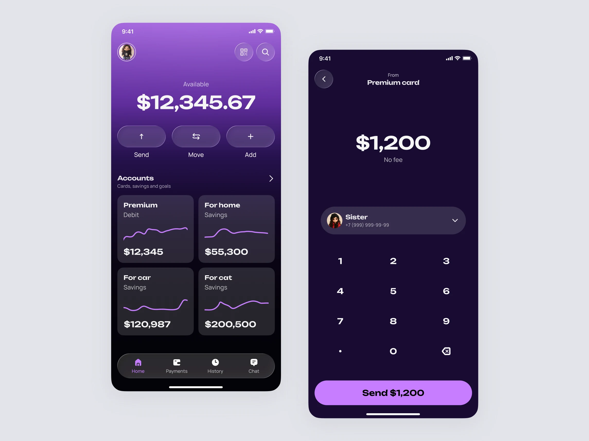
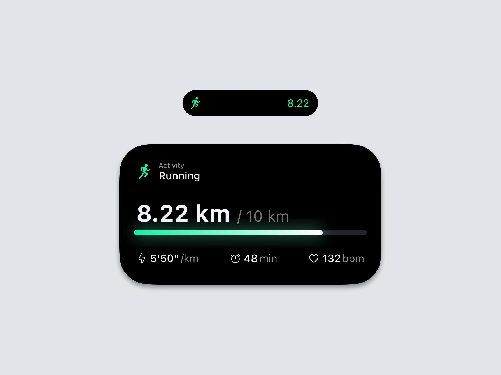
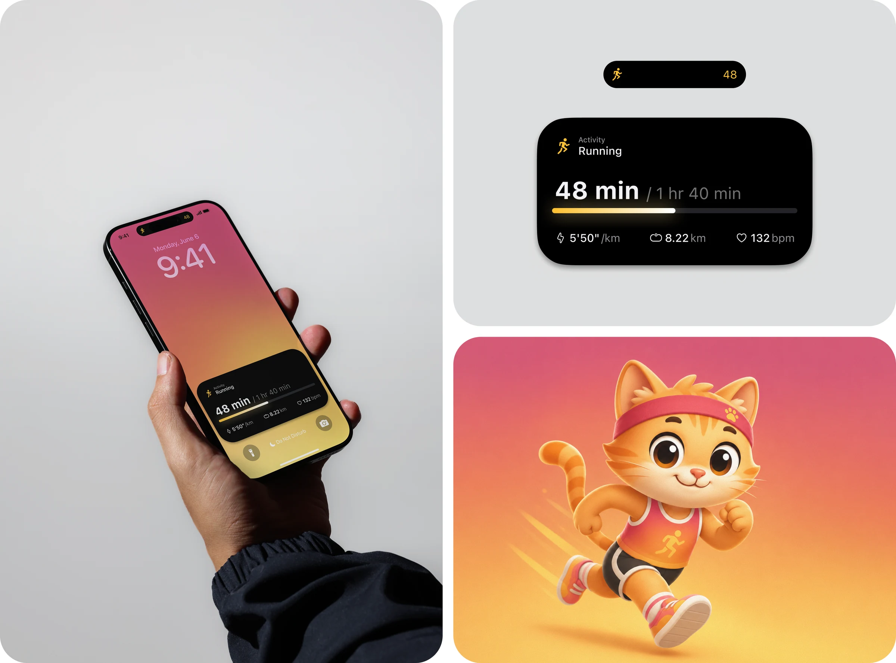
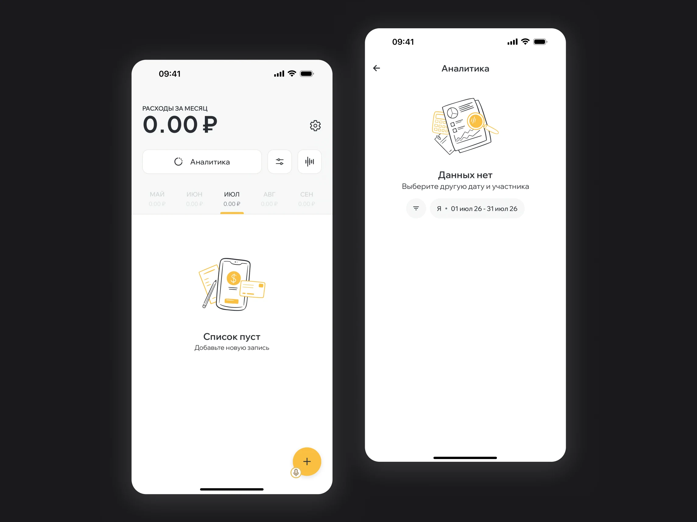

Афоничева Анастасия
Продуктовый дизайнер с 5-летним опытом работы
в FinTech, AutoTech и EdTech
Автор канала
Рабочий стол дизайнера
С командой превратили сложную систему платежей в понятный клиентский сценарий
Как мы упростили для клиента сложную систему финансовых обязательств:
объединили платежи, сделали прозрачными условия договора и спроектировали
сценарии от обычной оплаты до просрочки и расторжения.

Упростила сценарий сделки после наблюдений в дилерском центре Во время полевых исследований в дилерском центре я заметила повторяющееся действие, которое не соответствовало основному сценарию. Разобравшись в причине вместе с командой, мы вынесли нужную информацию в интерфейс — после этого регулярная необходимость в лишнем шаге практически исчезла.
Перевела сбор согласий родителей из бумажного процесса в цифровой Спроектировала единый сценарий для школы и родителей — от создания запроса до получения и фиксации ответа. Решение избавило сотрудников от раздачи и сбора бумажных бланков, сократило ручной контроль и риск потери согласий, а школе дало актуальную картину по ответам в одном месте.
Собрала разрозненный процесс ухода ученика в единую систему Спроектировала единый сценарий для родителей и сотрудников школы — от подачи заявления до обновления статуса ученика. Решение сократило ручную работу и операционные затраты, снизило риск ошибок и потери информации и дало школе более точные данные для планирования.
Интерфейсные зарисовки



